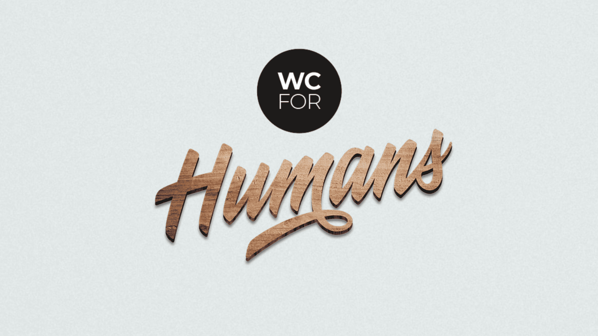

Signmaking / Lettering
The debate about unisex or genderless bathrooms in public spaces has been going on for years. No matter which point of view you might have on the topic or if it is relevant in your daily life, one thing is clear: the binary approach affects people and often makes the simple task of going to the toilet more complicated than necessary, whether the problem appears in the form of longer queues and waiting times for women at basically any social events, or the way non-binary-identifying people often feel mistreated and unaccepted through such a classification.
It’s about time we pour less energy in fighting about different gender concepts, but focus on what truly unites us all – we are all human beings with dignity and deserve to be accepted from one another whereever we go. The simple task of making public toilets accessible for everyone is a small step into that direction.
With that being said, I am very happy that I could contribute a tiny bit to the cause by creating this sign-concept for a local restaurant. The letters were drawn by hand, lasercut from oak wood and then put up on the bathroom doors, where they now make a beautiful and warm impression to welcome anyone.